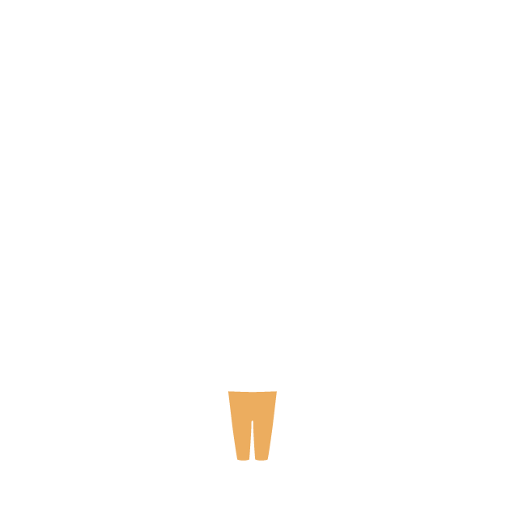

<!-- A-Labs -->

<link rel="import" href="../../bower_components/polymer/polymer.html">


<dom-module id="labs002-avatar-bottompages">
  <style>
      :host {
        display: block;
      --this-bottomcolor: var(--primary-purple);
        height: 100%;
        width: 100%;

      }


      neon-animated-pages {
        height: 100%;
      }

      .svgcontainer {
        width: 100%;
        height: 100%;
      }
      .svgcontainer img {
        width: 100%;
        height: 100%;
      }
      .bottomcolor {
        fill: var(--this-bottomcolor);
      } 


  </style>
  <template>

      <neon-animated-pages id="bottompages" selected="{{selected}}"  entry-animation="{{entryAnimation}}" exit-animation="{{exitAnimation}}">


          <!-- 0 -->
          <neon-animatable>
            <div class="svgcontainer">
              
            </div>
          </neon-animatable>
          <!-- -->

          <!-- 1 -->
          <neon-animatable>
            <div class="svgcontainer">
              
            </div>
          </neon-animatable>
          <!-- -->

          <!-- 2 -->
          <neon-animatable>
            <div class="svgcontainer">
              
            </div>
          </neon-animatable>
          <!-- -->

          <!-- 3 -->
          <neon-animatable>
          </neon-animatable>


    </neon-animated-pages>


  </template>
  <script>
  (function() {
    Polymer({
      is: 'labs002-avatar-bottompages',

      behaviors: [
      Polymer.NeonAnimatableBehavior
      ],

      properties: {
        selected: {
          type: Number
        },
        
        color: {
          type: String,
          value: '',
          observer: '_Watchit'
        },

        nrofitems: {
          type: Number,
          value: 3,
          notify: true
        }
      },

      ready: function(){
        this.entryAnimation = 'slide-from-right-animation';
        this.exitAnimation = 'slide-left-animation';
      },


      _Watchit: function(){

      this.customStyle['--this-bottomcolor'] = this.color;
      this.updateStyles(); 


      }


    });
  })();
  </script>
</dom-module>


